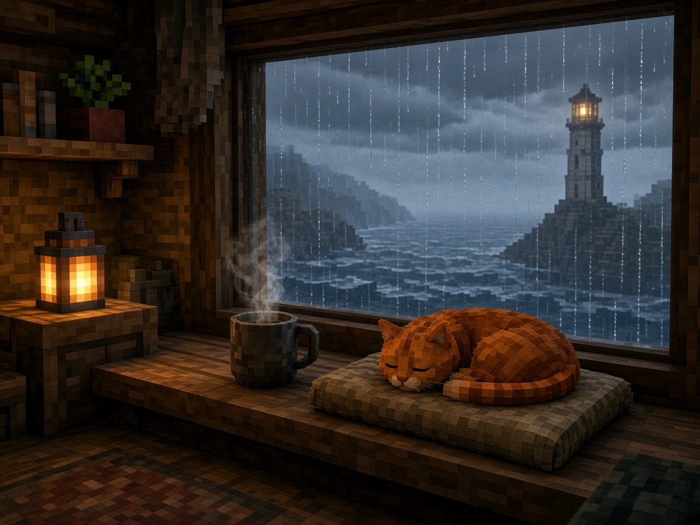
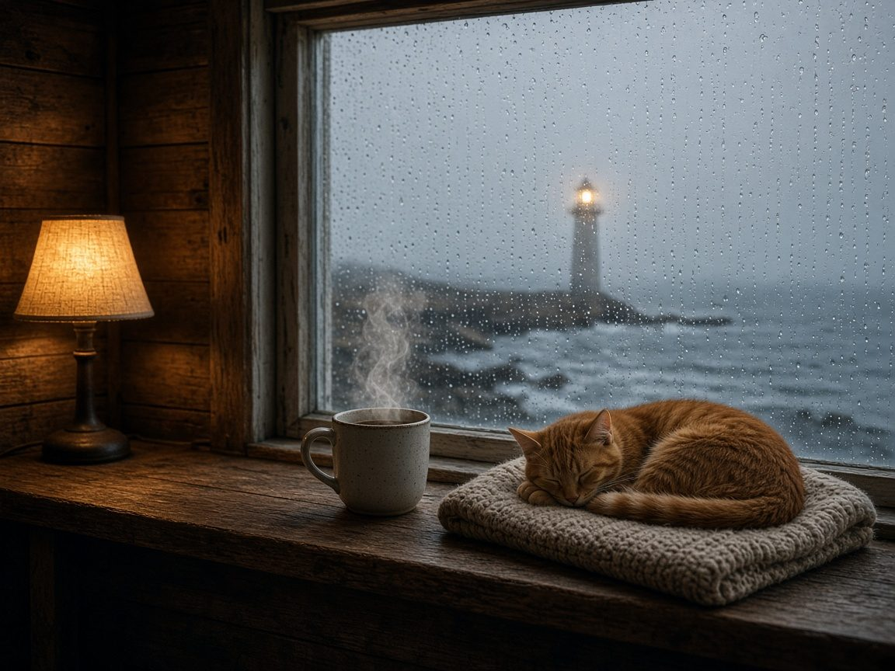
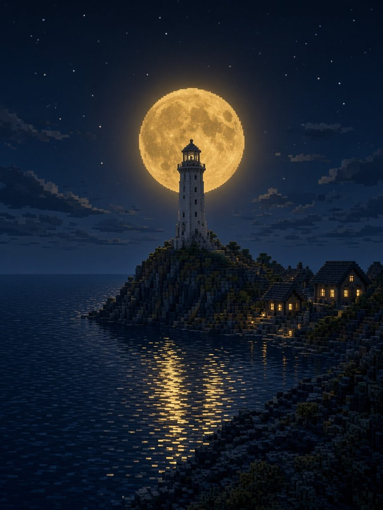
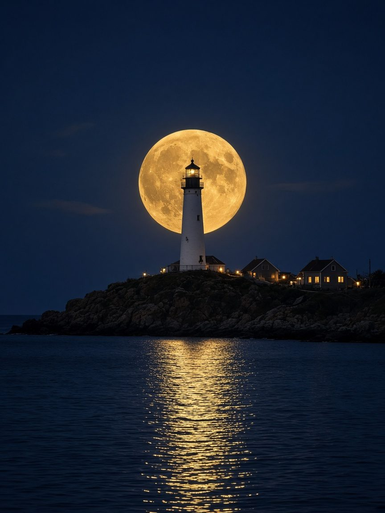
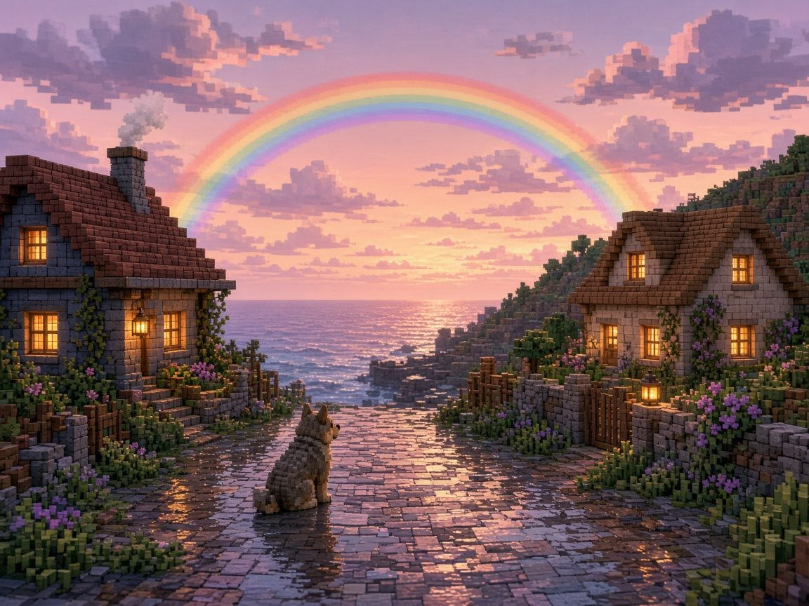
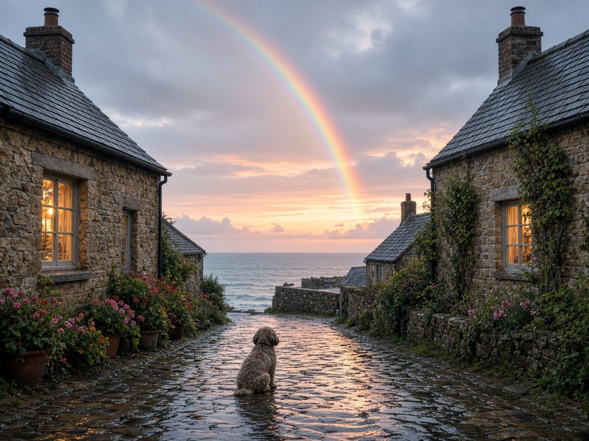
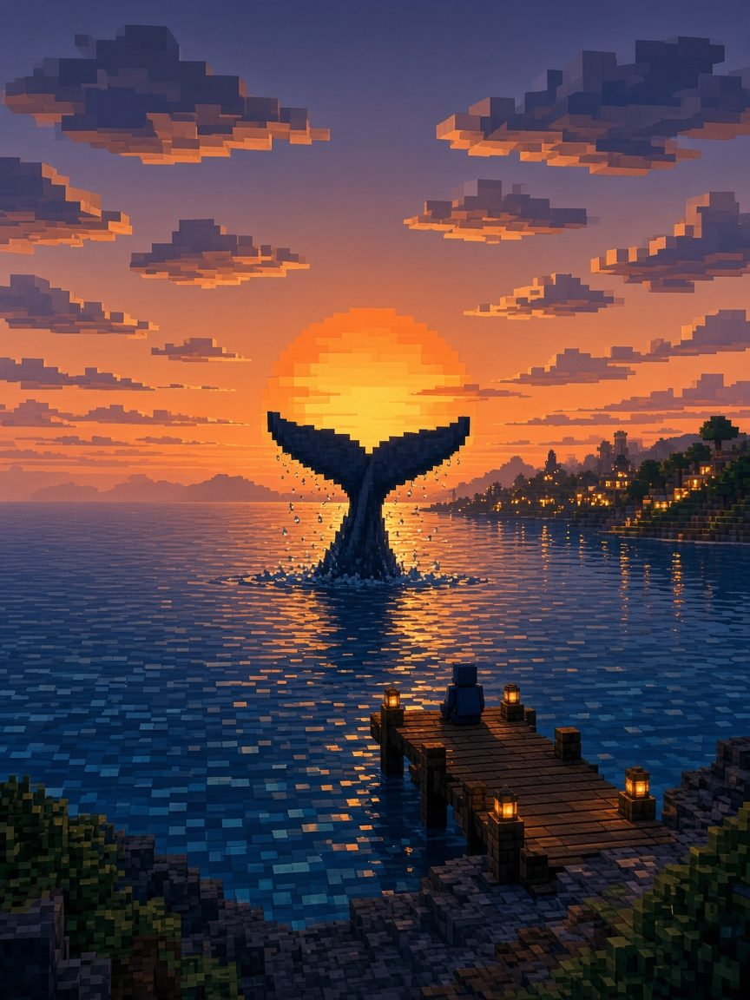
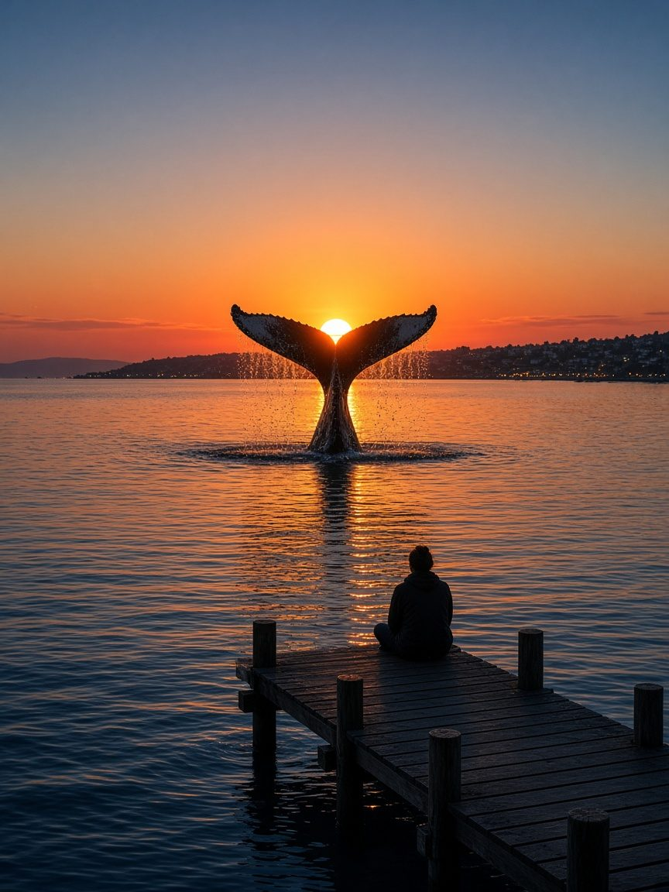
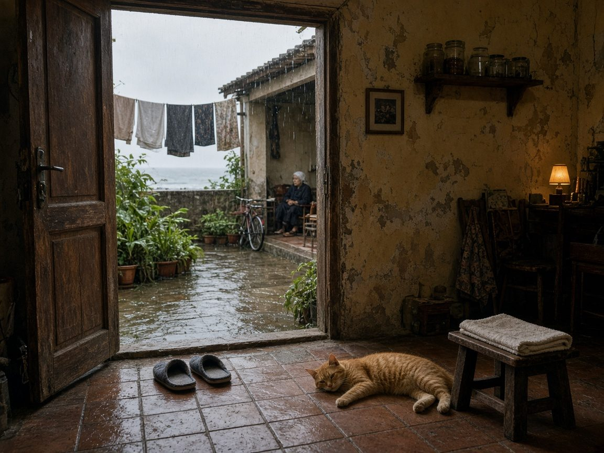
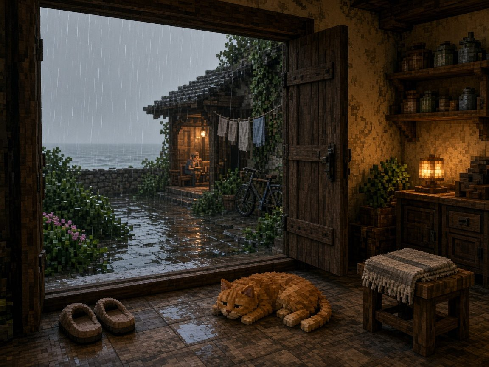

2026年11月11日
拆解 @hi_personality：7 秒追车奇幻视频为什么能爆
他在做什么
@hi_personality 发的是很短的 AI 风格奇幻视频。画面里通常有一个人骑自行车或摩托车往前冲，镜头追在后面，周围是城堡、星空、漩涡公路、峡谷夜景这种梦一样的场景，饱和度非常高。
配文极短，比如 grassland special、chasing、vortex road、gotta ride，全是小写。
真实数据
我看了他 2026-10-20 到 2026-11-11（北京时间）之间的 25 条帖子，总曝光 12,137,781。
| 帖子 | 时间（北京时间） | 曝光 | 点赞 | 收藏 |
|---|---|---|---|---|
| grassland special | 2026-10-29 06:12 | 8,464,261 | 20,668 | 10,046 |
| chasing | 2026-11-02 05:52 | 3,127,170 | 17,649 | 5,929 |
| vortex road | 2026-11-05 08:06 | 107,768 | 3,435 | 695 |
| gotta ride | 2026-11-03 09:40 | 76,150 | 2,228 | 423 |
| orbiting | 2026-11-06 03:08 | 41,370 | 1,281 | 253 |
能看出几件事：
- 两条爆款占了 95.5%。grassland special 和 chasing 两条加起来，占了这 25 条总曝光的 95.5%。其余的大多是一两万。
- 收藏特别高。grassland special 有 1 万多收藏，接近点赞的一半。说明大家是想"留着再看"，或者留着当参考。
- 有车 vs 没车差很多。画面里有人骑车往前冲的帖子，点赞中位数是 816；人站着不动或在爬的，只有 69。
- 爆了之后才定型。爆之前他什么都试；grassland special 之后的 12 条里，有 11 条都是"镜头跟在骑车的人后面"。
以上是我 2026-11-11 查看时的数字，之后还会变。点链接可以看原帖。
他最好用的一招：世界往上卷
远处的地面或者城市像一堵墙一样往上翘起来，人骑车冲向这堵"卷起来的世界"。846 万曝光的 grassland special 用的就是这招。
用了这招的有 7 条，曝光中位数 29,707，比整体要高。这种画面一眼就知道"现实里不可能"，人会忍不住停下来多看两秒。
为什么能爆
- 短，而且能循环。7 秒左右，看完会自动重播，很容易多看几遍。
- 颜色极端。在信息流里，高饱和的画面最先抓住眼睛。
- 有"往前冲"的动作。人在动、镜头在追，看的人会有种自己也在冲的感觉，很爽。
- 字少到几乎没有。两三个英文单词，全世界都看得懂，不用翻译。
- 固定一种样子天天发。爆了之后不乱换，粉丝知道每天会看到什么。
可以反复用的"场景 + 动作"公式
主角在动（骑车/摩托往前冲） + 镜头跟在背后 + 一个不可能的世界（往上卷的大地、漩涡公路、星空宫殿、云里的路） + 颜色拉满 + 7 秒 + 两三个小写英文词。
没能确认的
- 他用什么工具做的：他没说，我也没法确认。
- 背景音乐是不是他自己的：也没法确认。
这篇里没有放他的视频截图，想看效果请点上面的原帖链接。
对我有什么用
海边城市里本来就能开车。照这个公式，可以先做一个最小版本：
- 一个跟在车后面的镜头；
- 一条沿海的公路；
- 一套颜色拉满的黄昏调色；
- 一个按钮，一点就录 7 秒视频。
他的视频只能看，我的是网页里能玩的。所以发出去时，最后加一句 playable in the browser，看完的人可以点进来自己开一段。
拆解 @cozyycabin：治愈情绪图为什么让人想停留
他是谁
@cozyycabin，约 1.3 万粉丝，蓝标。简介只有一句 where the forest feels like home。主页没有放任何链接，看不出他靠什么赚钱。
他每天发五到九条"治愈氛围"的图和短视频：猫、牛犊、小狗、下雨、雾里的森林、小屋、月亮。颜色暖，画面安静。
真实数据
我看了他 2026-11-05 到 2026-11-11 之间的 50 条原帖：
- 曝光中位数大约 2,776，点赞中位数 178。
- 一大半完全不写字，写了的也只有两三个英文词，比如 pure peace、very sweet。
- 视频大多 8 到 15 秒，镜头几乎不动，或者只是慢慢往前走。
| 帖子 | 日期 | 曝光 | 点赞 |
|---|---|---|---|
| 置顶：A Unique Shot（海豚跃进落日、鲸尾托着满月） | 2026-08-03 | 745,875 | 45,423 |
| 窗台橘猫对着彩虹打哈欠 | 2026-11-07 | 243,748 | 27,131 |
也就是说，他平时一条并不高，火靠的是偶尔撞中一张"一眼就让人停下来"的画面。
数字是我 2026-11-11 查看时的，之后会变。这里没有转载他的图，想看请点原帖。
置顶为什么最火："刚刚好的奇迹"
两样东西在同一刻完美对上：海豚跃起时正好嵌进落日里，鲸鱼尾巴正好托住满月。看的人第一反应是"天哪，这也太巧了"，这种惊叹就是情绪。
不过构图完美得不太真实，可能是合成或 AI 做的，他自己没说明。
他的情绪分四类
| 情绪 | 画面 | 怎么做到的 |
|---|---|---|
| 惊叹（太巧了） | 置顶的海豚落日、鲸尾满月；一棵秃树的树冠里刚好镶着一团晚霞（约 1.9 万曝光，1,696 赞） | 把两样东西对齐成一个形状 |
| 敬畏（天空好神奇） | 月亮周围一圈彩虹色的光环（月晕，约 1.4 万曝光，1,041 赞） | 少见的天象，四周压暗，只留中间一点光 |
| 安心（像回到家） | 下雨天的老院子，门开着，猫躺在湿地板上 | 人在屋里看外面的雨，暖色墙配湿地面 |
| 心软（好可爱） | 窗台上的橘猫对着彩虹打哈欠 | 小动物的一瞬间，加一点好运符号（彩虹） |
为什么让人想停留
拿他的雨天老院子和我自己用 AI 做的样图对比，差别大概在四处：
- 像偶然撞见的，不像摆好拍的。猫随便躺着，主体不在正中间，构图有点歪。
- 有可以慢慢看的细节。门、墙上的画、铜壶、远处坐着的人、湿地板的反光，眼睛会到处转。
- 有"人在里面"的视角。你像是站在屋里门口往外看雨。
- 光和颜色更真、更暗。不是干净发亮的 AI 光滑感。
具体对比图放在 情绪先行 那一节里。
没能确认的
- 素材从哪来、用什么工具做的，他从来没写过。
- 一天发这么多，场景遍布各地，更像是收集整理别人的素材；有几条视频像 AI 生成的。这些我都没法确认。
所以只学他的感觉，不要拿他的图去发。
对我有什么用
他其实没有产品，做的是一个"每天给你一点治愈"的账号。这个方向放到我这里，最顺的是做一个治愈小世界：
- 先只做海边城市的一个小角落：一间海边小屋，下着雨，窗户亮着暖灯，有雨声，可以慢慢走、看海。
- 颜色用暖黄配灰蓝，整体调暗，只让灯光亮。
- 镜头不动或慢慢往窗外推，声音用雨声加一点轻钢琴。
- 每次加一个小惊喜：猫翻个身、雨停后海上出现彩虹、月亮从云里出来。
录 10 秒左右，配一句很短的英文，比如 a little rain, a little peace，再让看的人点进来自己待一会儿。
情绪先行：两种模式和「想待一会儿」的四个要点
两种情绪，两种模式
| 刺激模式 | 治愈模式 | |
|---|---|---|
| 学谁 | @hi_personality | @cozyycabin |
| 感觉 | 爽、"哇"、想冲出去 | 暖、静、"好巧"、想停下来歇一会 |
| 画面 | 黄昏，颜色拉满 | 下雨、起雾、湿路面，窗里亮着暖灯 |
| 镜头 | 跟在车后面往前冲 | 不动，或慢慢往前走 |
| 长度 | 约 7 秒 | 约 10 秒，配雨声 |
两边都几乎不写字。情绪不需要翻译，所以全世界的人都看得懂。
"刚刚好的奇迹"：可以故意设计出来
别人只能靠运气或后期合成去碰这种瞬间。在海边城市里，我可以把它做成会发生的事，藏在城市里等人去发现：
- 某个时间点，月亮正好从灯塔背后升起来；
- 黄昏时，一条鲸鱼在海湾里甩起尾巴，正好对着落日；
- 雨停之后，彩虹正好架在两座小屋中间。
找到了就一键截图或者录 7 秒，截下来的那一张，本身就是一条带情绪的帖子。
样图（第一版）
同一组场景，方块风和写实风各做了一张。方块风是想看看"放进海边城市里会是什么样"，写实风更接近 cozyycabin 的感觉。








写实版人一眼会以为是真拍到的，"太巧了"的惊叹更强；方块版更像"游戏里的一个瞬间"，有自己的辨识度，还能接上"可以在网页里玩"。
为什么第一版"不想待"：四个要点
第一版做出来好看，但看一眼就够了，没有 cozyycabin 那种"想在这里待一会儿"的感觉。对比下来差在四处：
- 像偶然撞见的，别放正中间。对称又完美的画面像明信片，看一眼就够。主体偏一点、构图随意一点，更像路过时随手拍到的。
- 有可以慢慢看的生活细节。晾着的衣服、门口的拖鞋、半开的窗、远处一个小小的人。眼睛有地方转，才会停留。
- 从屋里往外看。用门框、窗框、屋檐当前景，看的人像自己就站在那里。
- 光更暗，只留几处暖灯，加湿地面反光。太干净太亮会有 AI 的光滑感，人会觉得假。
第一版 vs 重做版
重做版是站在屋里门口往外看雨：门口一双拖鞋，猫随便趴在地上，凳子上搭着毛巾，外面晾着衣服、靠着一辆自行车，远处屋檐下坐着一个人，再往外是一点灰灰的海。


这些图都是 AI 画的方向参考，不是海边城市里真实渲染出来的画面。
放进海边城市
- 一键切换情绪模式：刺激的黄昏冲刺，或者治愈的雨雾慢走。
- 藏起来的"奇迹时刻"：月亮升到灯塔背后、鲸尾对着落日、彩虹架在两座屋之间，让玩家自己去找。
- 一键录 7 秒 / 截一张图：配一句很短的英文，直接能分享。
- 每个角落多放生活痕迹，多用屋里往外看的镜头。
发帖也跟着变：不再发"我加了下雨功能"，改发"在我做的世界里看到的一个瞬间"，最后加一句 playable in the browser。先让人有感觉，再告诉他可以点进来自己待一会儿。
HDR、饱和度和 X 平台
HDR 和饱和度有什么不一样
- HDR：同时找回高光和阴影里的细节。天空不再一片白，暗处也不再一片黑。
- 饱和度：只改变颜色的浓淡。已经丢掉的细节，它找不回来。
- 正确顺序：先做 HDR，再在 HDR 的图上加饱和度。如果直接在普通图上加饱和度，过曝和死黑的地方还是救不回来。
三张对比


发到 X 上会怎样
- 没有限流。"看起来像 HDR"的普通 JPG，X 当成正常图片处理，不会因为这个少推。
- 真正的 HDR 照片（带增益图 gain map，ISO 21496-1）：在 iOS 和网页上会"发光"，看起来更亮；安卓上不会。X 没有正式公告过这件事。
- X 没有 HDR 视频。上传的 HDR 视频会被自动转成 SDR（Rec.709），经常看起来发灰、发白。所以视频最好自己先导出成 SDR 再传，颜色自己说了算。
对我有什么用
- 海边城市录出来的视频，先在自己这边调好颜色，导出 SDR，再发到 X。
- 想要情绪感强的画面：先让亮处和暗处都有细节（游戏里可以用色调映射和曝光来控制），再往上加颜色浓度。